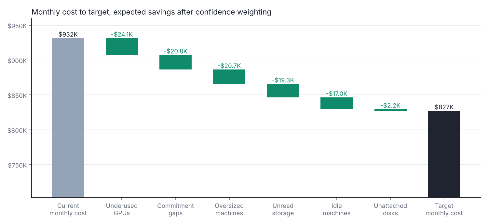
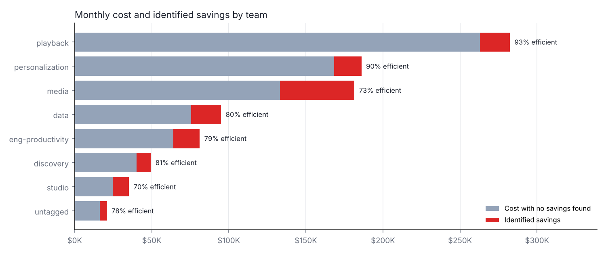
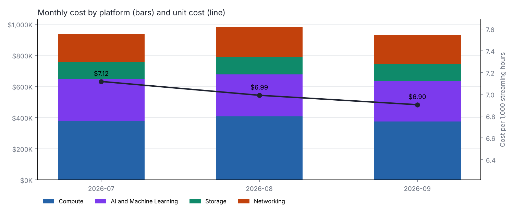
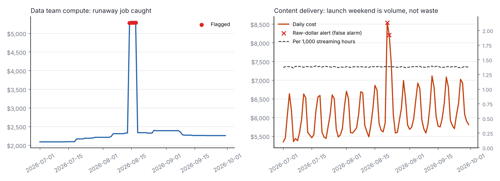

Cloud Efficiency Metrics
A metric framework for cloud and AI infrastructure cost at a fictional streaming company: what it spends, what it wastes, what it should target, and what changed.
All data on this page is simulated, with known problems planted on purpose so the rules can be scored. The pipeline reads the FinOps FOCUS billing format, so a real export can replace it.
Headline
Monthly cost$931,558Sep 1 to Sep 30, 2026
Efficiency84.3%Target 94.9%
Cost per 1,000 streaming hours$6.90Target $6.13
Expected monthly savings$104,184of $146,236 identified
Tag coverage97.7%Share of cost with a team owner
Now and target
| Metric | Now | Target |
|---|---|---|
| Monthly infrastructure cost | $931,558 | $827,375 |
| Cost per 1,000 streaming hours | $6.90 | $6.13 |
| Efficiency (1 - identified savings / cost) | 84.3% | 94.9% |
| Team tag coverage | 97.7% | 95.0% or higher |
| Cost covered by a savings rule | 79.2% | Add rules for delivery and AI tooling |
Cost to target

| Opportunity | Resources | Monthly savings | Confidence | Expected savings |
|---|---|---|---|---|
| Consolidate underused GPUs | 5 | $40,176 | 60% | $24,106 |
| Cover steady usage with commitments | 184 | $26,006 | 80% | $20,805 |
| Right-size oversized machines | 86 | $34,553 | 60% | $20,732 |
| Move unread data to archive | 18 | $24,091 | 80% | $19,273 |
| Shut down idle machines | 44 | $18,939 | 90% | $17,045 |
| Delete unattached disks | 14 | $2,470 | 90% | $2,223 |
Platforms
| Platform | Monthly cost | Identified savings | Efficiency | Rule coverage |
|---|---|---|---|---|
| Compute | $374,176 | $79,498 | 78.8% | 100.0% |
| AI and Machine Learning | $262,208 | $40,176 | 84.7% | 97.0% |
| Networking | $186,251 | $0 | 100.0% | 0.0% |
| Storage | $108,924 | $26,561 | 75.6% | 100.0% |
| Platform | Unit metric | Value |
|---|---|---|
| Compute | Cost-weighted CPU utilization | 36.9% |
| Compute | Effective cost per vCPU-hour | $0.0421 |
| Compute | Commitment coverage (prod vCPU-hours) | 60.1% |
| AI and Machine Learning | Cost-weighted GPU utilization | 56.8% |
| AI and Machine Learning | AI tooling cost per accepted output | $0.0701 |
| AI and Machine Learning | AI tooling acceptance rate | 44.9% |
| Storage | Object storage cost per TB-month | $20.84 |
| Storage | Share of data in archive tier | 9.9% |
| Networking | Delivery cost per 1,000 streaming hours | $1.380 |
| Networking | Delivery cost per TB | $0.60 |
Teams

| Team | Monthly cost | Identified savings | Efficiency | Share of cost |
|---|---|---|---|---|
| playback | $282,356 | $19,329 | 93.2% | 30.3% |
| personalization | $186,054 | $17,754 | 90.5% | 20.0% |
| media | $181,507 | $48,189 | 73.5% | 19.5% |
| data | $94,970 | $19,399 | 79.6% | 10.2% |
| eng-productivity | $81,083 | $17,156 | 78.8% | 8.7% |
| discovery | $49,408 | $9,334 | 81.1% | 5.3% |
| studio | $35,217 | $10,478 | 70.2% | 3.8% |
| untagged | $20,962 | $4,596 | 78.1% | 2.3% |
Trend

Anomalies

| Date | Team | Platform | Measured as | Cost | Expected | Excess |
|---|---|---|---|---|---|---|
| 2026-08-14 | data | Compute | daily cost | $5,279 | $2,214 | $3,065 |
| 2026-08-15 | data | Compute | daily cost | $5,288 | $2,214 | $3,074 |
| 2026-08-16 | data | Compute | daily cost | $5,288 | $2,214 | $3,074 |
| 2026-08-17 | data | Compute | daily cost | $5,288 | $2,214 | $3,074 |
AI tooling
| Team | Monthly spend | Weekday users | Acceptance rate | Cost per accepted output |
|---|---|---|---|---|
| eng-productivity | $2,370 | 78 | 52.0% | $0.061 |
| data | $1,676 | 64 | 44.3% | $0.071 |
| playback | $1,234 | 59 | 41.8% | $0.075 |
| personalization | $1,179 | 52 | 47.3% | $0.067 |
| media | $621 | 45 | 33.5% | $0.094 |
| discovery | $542 | 32 | 37.8% | $0.083 |
| studio | $225 | 26 | 29.0% | $0.109 |
Detection scorecard
| Problem | Planted | Flagged | Correct | Precision | Recall |
|---|---|---|---|---|---|
| Shut down idle machines | 50 | 44 | 44 | 100.0% | 88.0% |
| Right-size oversized machines | 80 | 86 | 80 | 93.0% | 100.0% |
| Consolidate underused GPUs | 5 | 5 | 5 | 100.0% | 100.0% |
| Move unread data to archive | 18 | 18 | 18 | 100.0% | 100.0% |
| Delete unattached disks | 14 | 14 | 14 | 100.0% | 100.0% |
Data checks
- FOCUS columns present: all required columns found
- Duplicate line items: removed 300 duplicated line items worth $7,134.73 (days: 2026-09-12)
- Invoice match 2026-07: billed $923,931.63 vs invoice $923,931.63 (gap $+0.00)
- Invoice match 2026-08: billed $965,958.39 vs invoice $965,958.39 (gap $-0.00)
- Invoice match 2026-09: billed $916,558.11 vs invoice $916,558.11 (gap $-0.00)
- Commitments fully amortized: purchases $736,182.72 vs amortized usage $736,182.72 (gap $+0.00)
- Negative cost only on credits: ok
- Charges inside their billing month: ok
- Team tag coverage: 97.7% of usage cost has a team tag (target 95%)